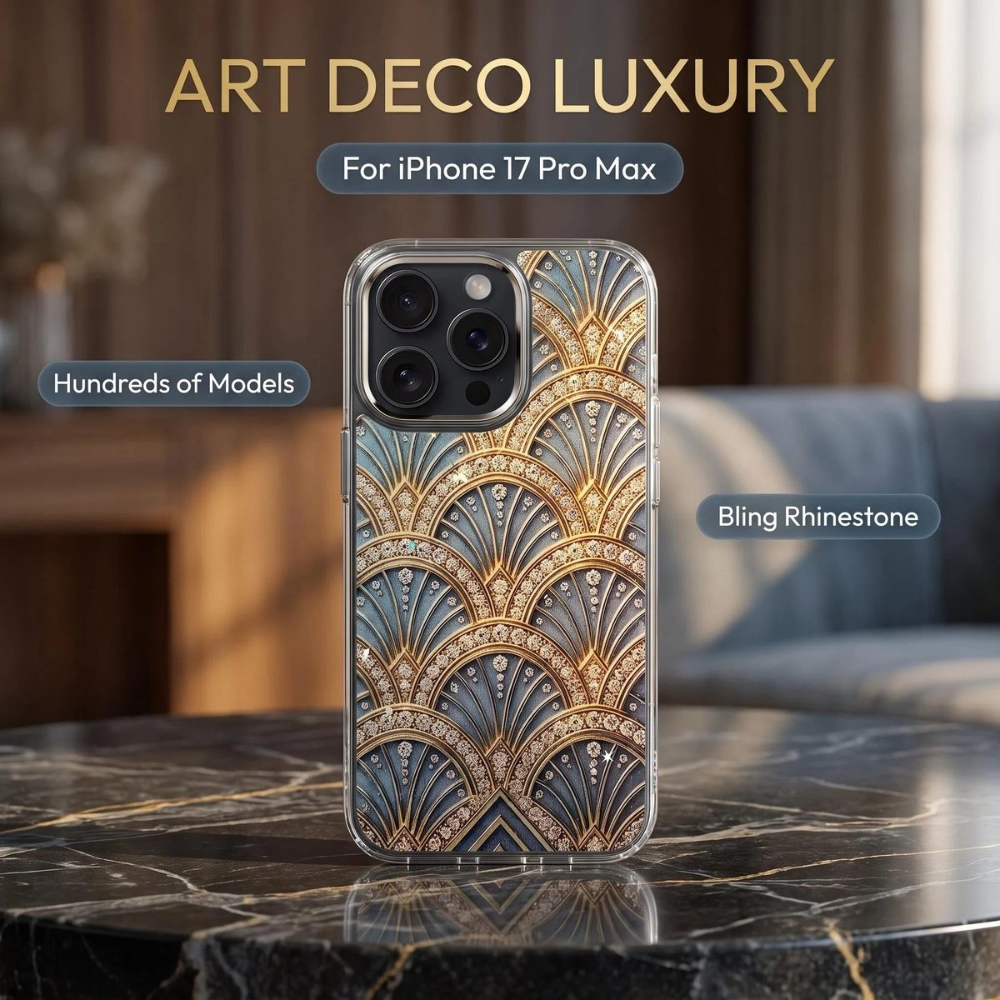
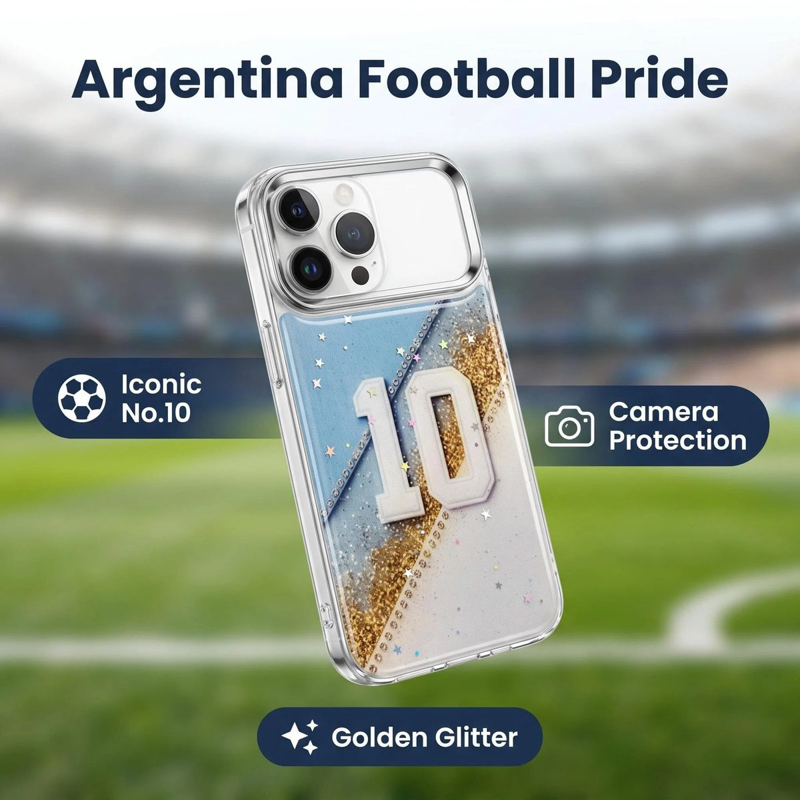
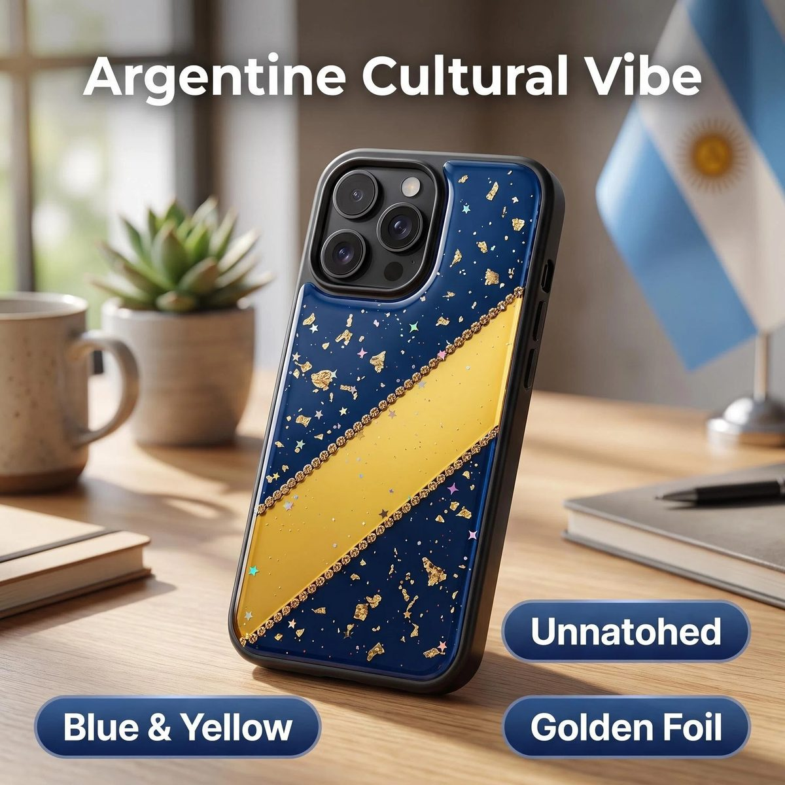
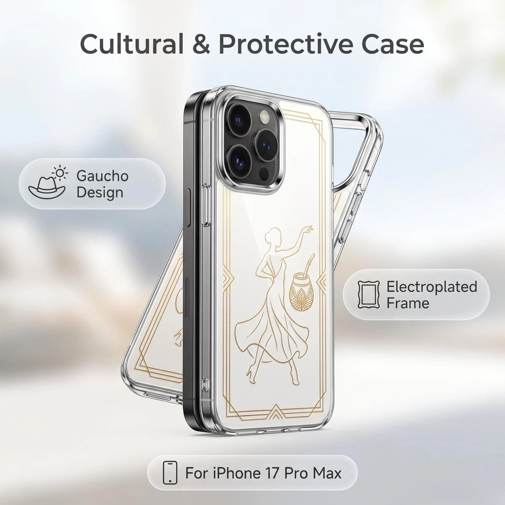
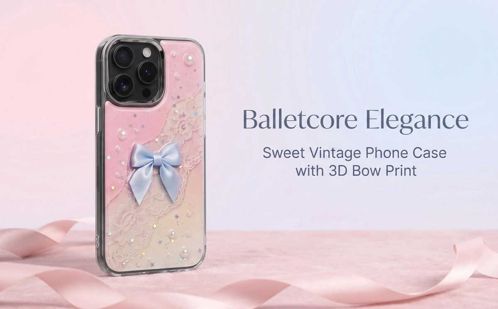
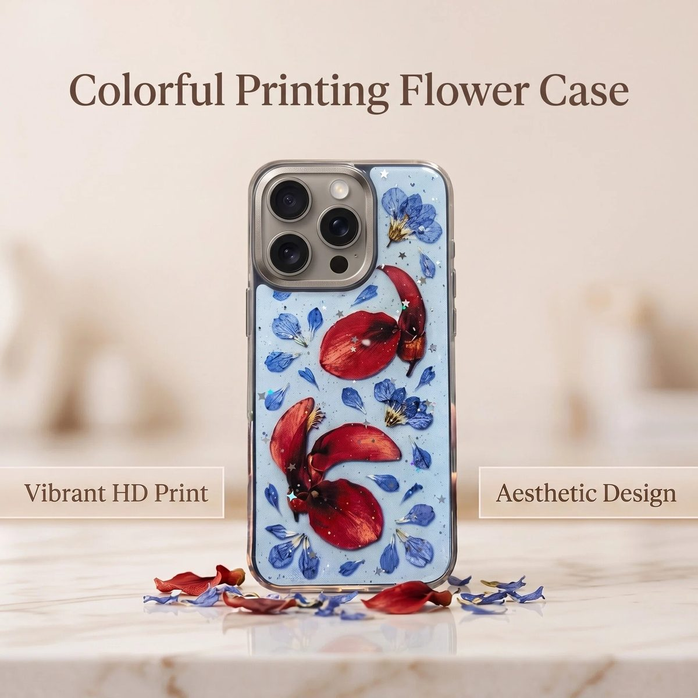

DUYIO · Guangzhou
Original designs, cast into every case.
Original, culture-inspired accessories and gifts — designed in-house, produced through a managed network of 500+ factories across China, never resold from someone else's mold.

Art Deco Luxury — #DYF2445Featured Collections
Four stories, one craft.
Every collection starts as a design brief, not a warehouse SKU. Each piece is drawn, sampled and cast in resin around a single idea — then produced through the same managed partner network, to the same standard.
Collection Argentina Culture — four designs

At the center of this case sits the Sol de Mayo — the sun with a human face that sits between Argentina's two pale-blue flag bands. Molded in raised gold relief over a gold-flecked clear resin back, it traces to the 1810 May Revolution, read ever since as freedom, dawn and new beginnings.

The oversized No. 10 nods to the line of Argentine football legends — from Kempes to Maradona to Messi — who carried that number and the weight it holds. Sky-blue and white recall the national colors, while gold glitter echoes the World Cup trophy and the three stars on Argentina's crest.

The high-contrast blue and yellow are Argentina's "Boca colors," the palette that fills the streets of La Boca in Buenos Aires, home to one of the country's most storied football clubs. Scattered gold foil stands in for the Sol de Mayo — the golden sun symbolizing freedom, dawn and new beginnings.

The line-art silhouette depicts a gaucho, the horsemen and herders of the Pampas who became a symbol of freedom and rural identity in Argentina. In her hand is a mate gourd and its bombilla straw — sharing mate is one of the country's most enduring rituals of hospitality and trust.
Collection Balletcore & Floral Story

Every detail carries a soft, specific meaning: the bow is printed in place rather than glued, so it never peels or catches. Scattered pearls add a quiet, vintage elegance, while the lace motif borrows from romantic European costume in a pastel palette that leans gentle rather than loud.

No single flag or era sits behind this one — the meaning is in the colors. Deep red petals carry warmth and passion, cooler blue blossoms bring calm and quiet hope, and scattered silver stars nod to dreams worth holding onto. Real dried petals are sealed into the resin, a deliberate way of preserving a fleeting moment.
How We Work
500+ factories. One studio running them.
We don't own a single factory — that's what lets us run the network instead of being limited by it. Every design is placed with whichever specialist in our 500+ factory network across China builds it best, matched by material and process rather than locked into one production line. We own the concept, the sample approval and the inspection; the network builds to our spec.
-
I.
Design
Original concept and artwork, developed in-house around one cultural or aesthetic idea.
-
II.
Sampling
A physical sample is produced by our production partner from the approved artwork.
-
III.
Team Review
Our own team inspects and signs off on every sample before it goes to bulk.
-
IV.
Managed Production
Bulk manufacturing runs through the right partner in our 500+ factory network, matched to this design's process.
-
V.
Pre-Shipment Check
Every order is inspected before it leaves the partner facility.
We run this way on purpose, not by default: owning zero factories means we're never limited to what one production line can run. A resin-casting specialist builds the phone cases; an electroplating shop handles metal frames; an embroidery house takes on textile pieces — we route each design to whichever factory in the network does that process best, then hold every one of them to the same sample and inspection standard.
The Team
Seven people behind every piece.
A small team, each owning one part of the process from concept to delivery.
 Lincoln Lin
Founder & General Manager
Lincoln Lin
Founder & General Manager
Sets the studio's design direction and leads partnerships with buyers worldwide.
 Jolin Qiu
Operations Manager
Jolin Qiu
Operations Manager
Runs day-to-day production workflow; her background in premium leather-goods manufacturing shapes our materials standards.
 Noemi
Spanish Market Manager
Noemi
Spanish Market Manager
Handles every Spanish-speaking partnership — fitting, given how many of our designs draw on Latin American culture.
 Alisa
Order Fulfillment Manager
Alisa
Order Fulfillment Manager
Keeps every order moving on schedule, from confirmed sample to shipped carton.
 Jane
Production Sourcing Manager
Jane
Production Sourcing Manager
Manages the partner network that turns our designs into finished pieces.
 Smiling
Merchandiser & Trend Curator
Smiling
Merchandiser & Trend Curator
Researches emerging aesthetics and feeds new design themes into the studio.
 Harrison Zhang
Quality Director
Harrison Zhang
Quality Director
Sets and enforces the inspection standard every design has to meet before it ships.
Let's build something exclusive.
Tell us the culture, occasion or story you want your next accessory to carry — we'll turn it into a sampled, ready-to-produce design.
+86 185 2039 9195
support@duyio.com
Guangzhou, China